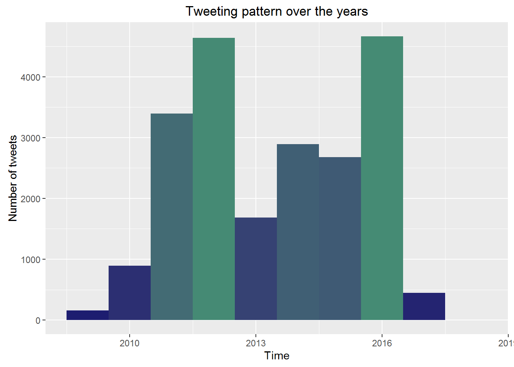
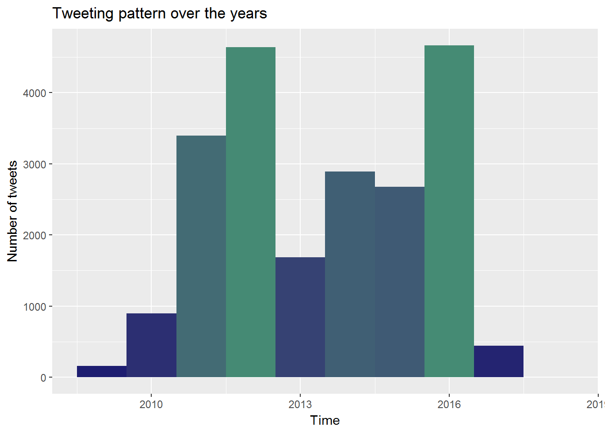
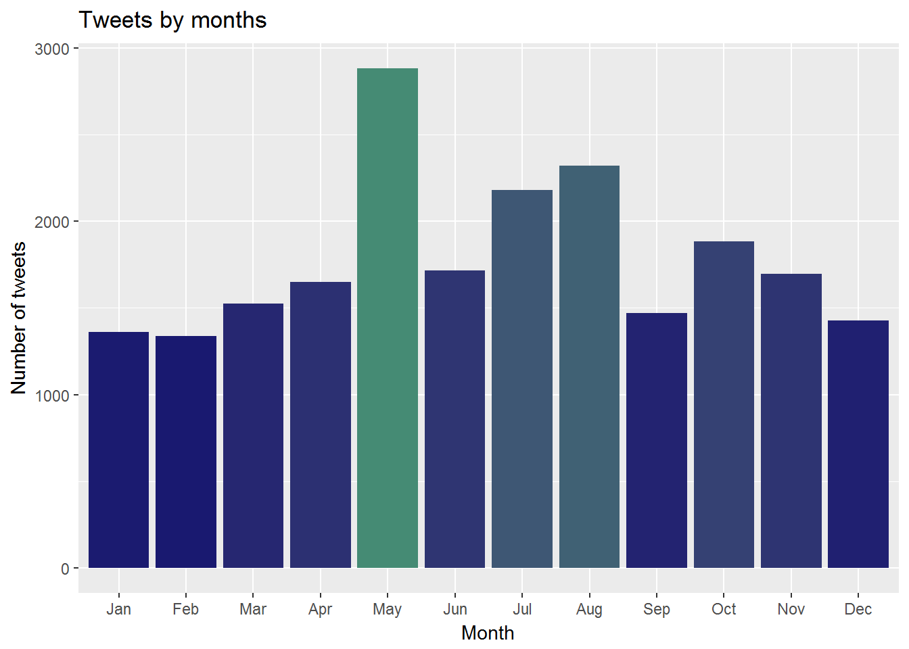
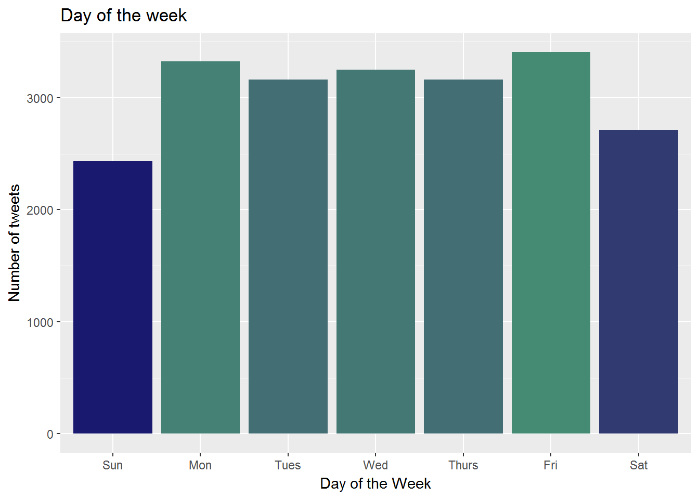

In this blog, I am going to use various R packages mainly from the tidyverse package by Hadley wickham to analyze tweets from twitter archive of lordMwesh to find out his tweeting habits.
lordMwesh is an ICT policy expert with vast experience in Internet governance. He was extremely instrumental in my formative stages of my career and continue to walk with me in my journey of data analytics. His twitting habits will be unravelled
Twitter archive is a nice large dataset with results that can be interesting but not critical to the running of the world but its good enough for learning R statistical language. To download your twitter data browse to your Twitter Profile > Settings page, then click request your archive. You should be able to download a .zip file with among other files, a nicely formated dataset of your tweets in form of an excel file.
The first step was to load the tweets and quick summary was able to show that lordMwesh had tweeted or retweeted 21447 times from the time he joined twitter
How has lordMwesh been tweeting over the years?
 lordMwesh joined twitter in 2009 with 2016 and 2012 being his most active years on twitter.
I then sought to identify how his tweeting pattern looked like over the days of the week and time of the day.
 Monday and Friday turned out to be the most active days while sunday ranked the lowest. Generally, weekdays ranked high in terms of tweeting frequency, it is yet to be seen if the tweeting was productive or not.
Further to this, it was apparent that mid morning and late evening were the best time for lordMwesh to tweet. Howerver, signficant tweeting appears to have taken place at 3am, which calls for further analysis.

Lets get the number of tweets retweeted. It happens that majority of lordMwesh’s tweets were “original” tweets.
